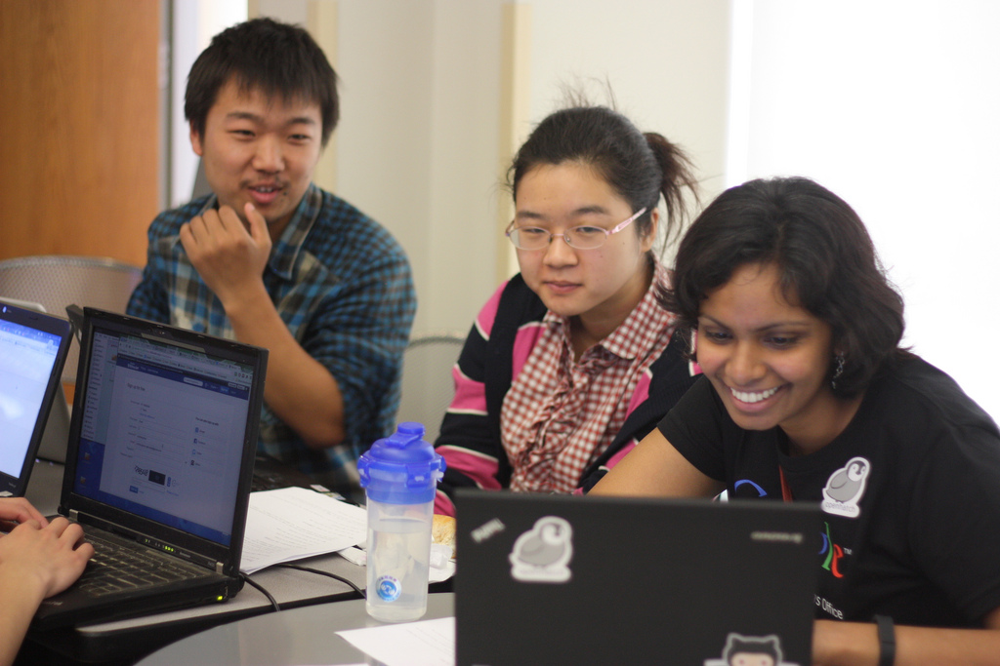
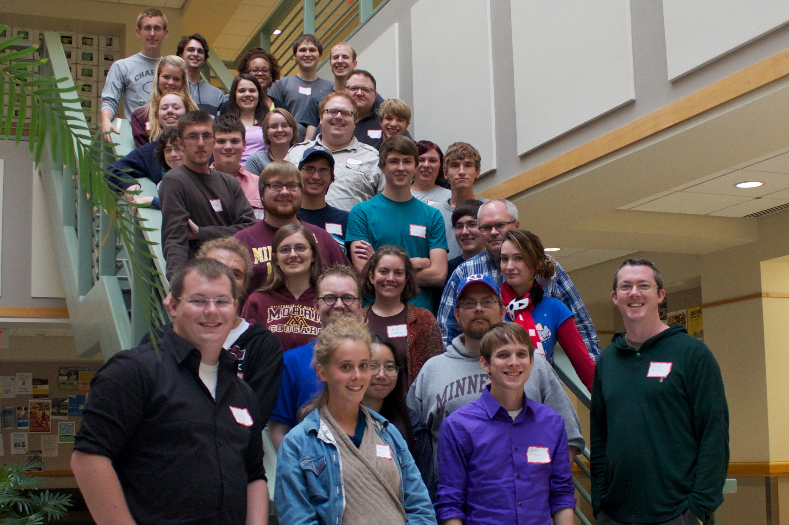
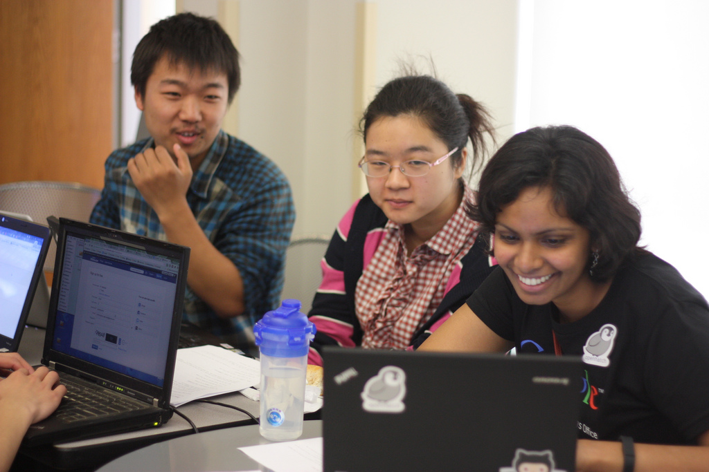
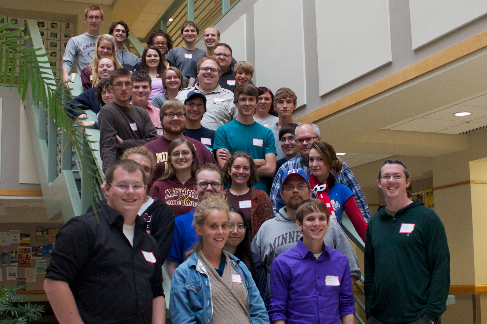
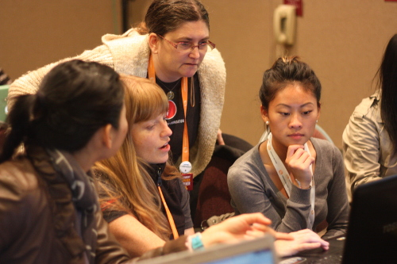
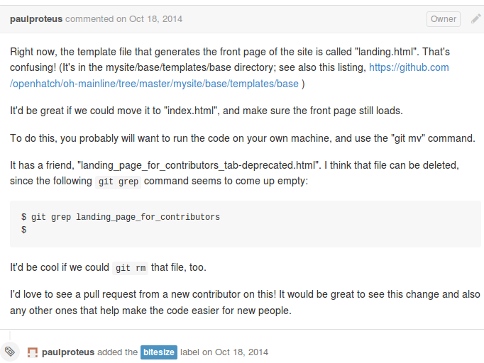

OpenHatch
Fifty campus events (as of last week!)

 



Lots of volunteers
Lots of enthusiasm
Lots of obstacles
This Talk Is
a whirlwind tour of obstacles and how to solve them
for newcomers and oldtimers
in five parts
- Picking projects
- Identifying good first tasks
- Setting up development environments
- Finding the time to contribute
- Tackling impostor syndrome
Know Thyself
Questions for newcomers:
- Why do you want to contribute to open source projects?
- What kind of tasks do you know you enjoy?
- What skills do you already have? Which do you want to learn?
- What kind of commitment can you make?
- What kind of communities sound appealing to you?
Share your knowledge
"I'm pretty new to Django (just went through the tutorial) and am looking for a Django project to contribute to. I want to see how it works in the real world!"
"It's spring break for me now, so I can do a lot this week, but after that I'll only be available for an hour or two a week until summer."
"I'm a visual learner. Is there any documentation I could add illustrations to?"
Know Thyself
Questions for maintainers:
- What kind of community do you want to build? Big and bustling? Tight-knit?
Rough and tumble? Diverse? - How much time and energy can you give to mentoring and community building?
- What are your weaknesses and strengths as a mentor?
- What are your weaknesses and strengths as a community?
Example: EdX
How to evaluate a project
Activity
Responsiveness
Culture
Activity
How often do issues get reported?When was the last commit get merged?
How busy is the IRC channel and mailing list?
Note: More activity is not always better!
Django (big) |
Django-braces (small) |
|
Django-tagging (inactive) |
Rules of thumb: |
Responsiveness
Do community members respond to bug reports?Do maintainer give feedback on pull requests when they need changes, or just let them sit there?
When someone asks for help on IRC, do people respond?
Example: SciPy
Culture
How are users with questions treated?How are other newcomers treated?
Does the community have a Code of Conduct?
Examples: Khmer and PyLadies
Identifying Good First Tasks
Mentored Tasks
Newcomer Tasks
Bitesized Tasks
Mentored Tasks
Pairing is great. You can do it remotely, via screen sharing.
If you're willing to mentor someone, tag an issue with "mentored".
Newcomers: no harm in asking, "Is there someone who can mentor me on this task?"
Newcomer Tasks

Newcomers are the perfect people to help you:
Improve your setup instructions
Do user experience testing
Setup Sprints
for setup instructions
- Two or more people, at least one newcomers and one maintainer.
- Newcomer goes through setup guide in real time.
- Unearths confusing language, missing steps, unknown dependencies.
- The newer and less experienced the newcomer, the more gaps they'll find!
Think Alouds
for user testing
- (Need to use videochat or be in person for this one!)
- Maintainer gives the newcomer a goal or task.
- Newcomer speaks their thoughts as they try to accomplish the task.
- Maintainer can prompt them with, "What are you thinking?" and clarifying questions.
Other newcomer-friendly tasks
- Making project websites more accessible to screen-readers
- Reproducing bugs in the issue tracker
Maintainers: list these tasks in your contributing guides!
Newcomers: ask if they need doing, even if they aren't listed!
Bitesize Tasks

What Does The Task Say?
- skills needed and tools needed
- links to relevant documentation
- where to make the change (or how to figure out where to make the change)
- what community members can help/give feedback
Maintainers: provide this information!
Newcomers: if you're stuck, try asking about this info!
Example: OpenHatch
Information for your setup guide
(Remember, newcomers can help create these guides with setup sprints!)
- What virtual environments or development kits you need
- What dependencies you need
- How to download the source
- Which version to download
- How to build/compile the project
- How to test your changes
- How to contribute your changes back to the project
- Contact information for community/maintainers
- Overview of the project
- As much documentation as possible
Examples: Pyramid, Pandas, Scrapy
Finding time to contribute
Be explicit about communication:
Finding time to contribute
Opportunities to make time:
Finding time to contribute
Maintainers, multiply your efforts
Impostor Syndrome
aka feeling like a fraud, like you're not good enough
See Julia Pagano's excellent talk from last year's PyCon
Maintainers
You don't have to know everything:
- show that you're still learning
- show how you're still learning
- embrace your mistakes
Check out the Hacker School Social Rules:
- No feigning surprise
- No well-actually's
- No back-seat driving
- No subtle -isms
Newcomers
Know you're not alone!
Focus on values:
Takeaways
- Make the implicit explicit.
- Not every match is a good one, and that's okay!
- We are all always learning.
Thanks
Images
"The New Fred Meyer on Interstate on Lombard" by Lyza CC BY SA2.0 https://www.flickr.com/photos/lyza/49545547/
"Con capa sobre La riñonera" by MaloMalverde CC BY SA 2.0
https://www.flickr.com/photos/malomalverde/8598030211